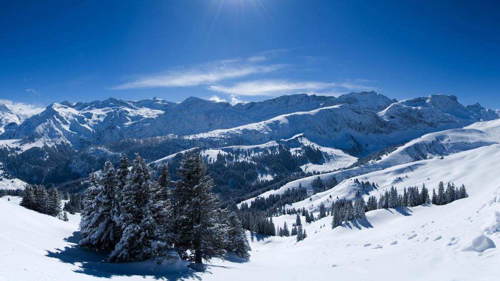
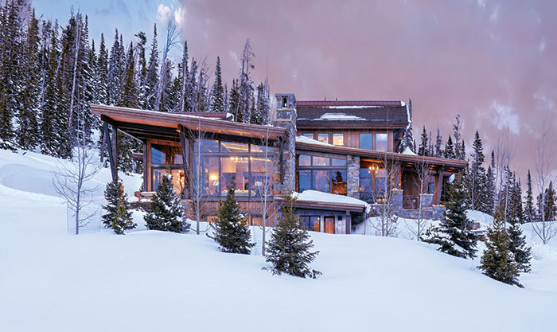
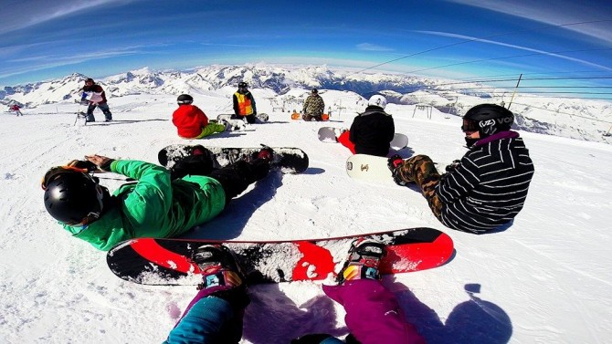
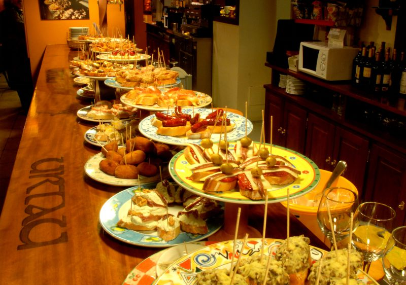

En esta página muestro mi viaje soñado en unas cuantas imágenes.
|  |
Montaña nevadaLas vistas de una montaña nevada de este tipo transmiten tranquilidad y paz. Es un sitio que realmente me gustaría conocer por sus vistas increibles. |
|  |
Casa en lo alto de la montañaA pesar de que la naturaleza es hermosa, la comodidad también es importante para mí. Por eso creo que es importante tener un lugar cómodo en el viaje para descansar, pero que al mismo tiempo esté en contacto con la naturaleza. Una casa en la cima con la vista al valle nevado sería el lugar para esto. |
|  |
La compañía es importanteNo sería un viaje completo sin una buena compañía, por ello sería un viaje perfecto si puediese ir con algunos amigos o seres querídos para compartir todas las experiencias y demás cosas que nos ofezca el viaje. |
|  |
Energía positivaAl ser un lugar muy frio, lo ideal en comida serán platos recien preparados. Carnes cocinadas, cosas con queso derretido, pan tostado, pasta, pollo y bebidas calientes como café o chocolate. Siempre es una opción a toda hora comer algo de fruta y beber agua para estar hidratado. |
El camino es tan divertido como el destinoYo pienso que el viaje debe ser divertido desde que se sale de casa hasta que se vuelve a ella, entonces si es posible llegar a la casa en la montaña usando transportes que muestren la belleza del sitio, ¿por qué no usarlos?. Un viaje en tren viendo lo exotico del recorrido siempre será bienvenido para este viaje. |
Todo esto compone mi viaje soñado.